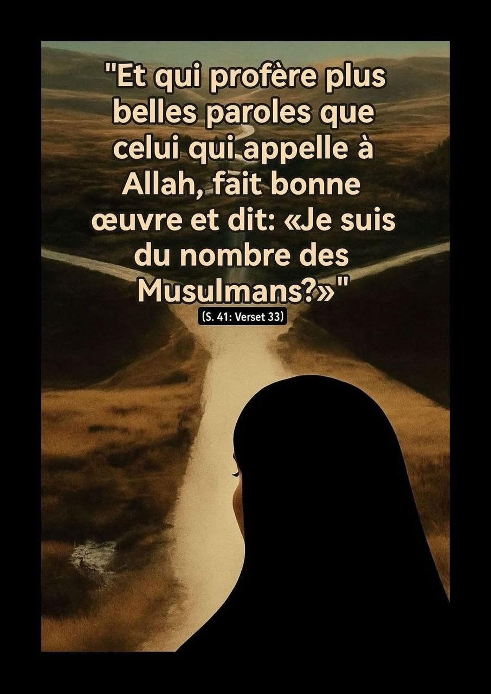

L’appel à Allah : la plus noble des paroles

“Et qui profère plus belles paroles que celui qui appelle à Allah,
fait bonne œuvre et dit : Je suis du nombre des Musulmans ?”
وَمَنۡ أَحۡسَنُ قَوۡلًا مِّمَّن دَعَآ إِلَى ٱللَّهِ وَعَمِلَ صَٰلِحًا وَقَالَ إِنَّنِي مِنَ ٱلۡمُسۡلِمِينَ
(Sourate Foussilat, verset 33)
Ce verset met en lumière trois qualités essentielles
du croyant sincère :
Appeler à Allah non pas uniquement par la parole,
mais aussi par le comportement, l’exemple, l’attitude.
Faire de bonnes œuvres car l’appel est creux
s’il n’est pas suivi d’actes vertueux.
Affirmer son identité musulmane sans
arrogance, mais avec fierté et humilité.
Ce verset nous enseigne que la beauté des paroles
ne se mesure pas à l’éloquence, mais à la sincérité de l’appel,
à la droiture de l’intention, et à la
cohérence entre les mots et les actes.
Dans un monde où les voix s’élèvent pour tout et son contraire, celle qui invite au Bien,
à la Vérité et à la Paix intérieure est la plus précieuse.
L’appel à Allah est un acte de miséricorde pour soi et pour les autres,
un geste d’amour véritable pour l’humanité.
Ce verset est aussi une responsabilité silencieuse : si nous disons “Je suis musulman”,
alors nos paroles, nos gestes et nos choix doivent le refléter.
Il ne s’agit pas seulement d’un nom ou d’une
identité culturelle, mais d’un engagement spirituel profond.